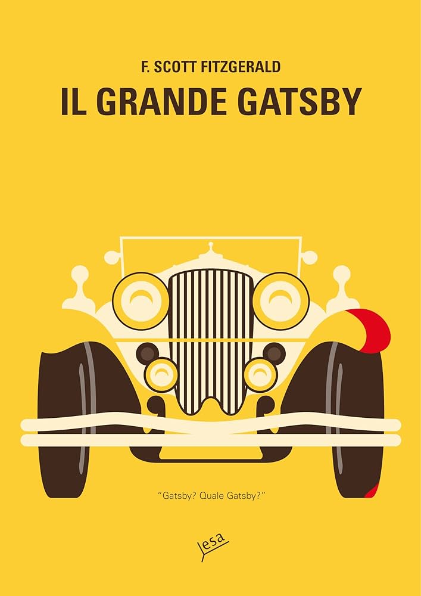

Nella Long Island degli anni Venti, tra feste sfarzose e un'euforia economica destinata a infrangersi, Nick Carraway si trasferisce accanto alla sontuosa villa di Jay Gatsby, un uomo misterioso la cui immensa ricchezza sembra avere un unico scopo: riconquistare Daisy Buchanan, l'amore perduto anni prima. Dietro lo scintillio dei party e del jazz, Fitzgerald costruisce un ritratto spietato del sogno americano, della sua promessa di reinvenzione e della sua fondamentale illusione — un romanzo capace di essere insieme elegantissimo e profondamente malinconico.
L'ho letto in digitale, gratuitamente — top. Ho scelto di leggerne esattamente un capitolo al giorno, per dieci giorni consecutivi, dandomi tutto il tempo di assorbirlo con calma.
Mi è piaciuto molto scoprire, capitolo dopo capitolo, il significato di alcuni dettagli — come il perché in copertina ci fosse un'auto gialla, o il senso della citazione all'inizio del libro. Non mi aspettavo assolutamente il colpo di scena a metà libro, e tanto meno l'episodio finale.
Solo dopo aver finito mi sono accorta di aver sottolineato parecchio, e persino alcune frasi che mi sono piaciute davvero tanto. Più di una volta ho provato un po' di pena per Gatsby.
Non è stata una lettura estremamente allettante per me, ma ho amato alcuni passaggi.
"Ogni volta che ti viene voglia di criticare qualcuno, ricorda che non tutti al mondo hanno goduto dei tuoi privilegi."
"Tutto ciò che riuscivo a pensare era 'La vita non è eterna, la vita non è eterna'."
"Ero ubriaco da una settimana ed ho pensato che stare seduto in una biblioteca mi avrebbe, forse, reso più sobrio."
"È sempre triste guardare con occhi diversi cose alle quali, con fatica, ci siamo adattati."
"Le ho detto che poteva imbrogliare me, ma non Dio... Dio sa cosa hai fatto, qualsiasi cosa tu abbia fatto. Puoi prenderti gioco di me, non di Dio!"
"Ciascuno di noi si suppone dotato di almeno una delle virtù cardinali, e questa è la mia: sono una delle poche persone oneste che abbia mai conosciuto."
"Impariamo a dimostrare la nostra amicizia per qualcuno quando questi è in vita e non dopo che è morto."
"Dicevi che un cattivo guidatore si sarebbe salvato finchè non ne avesse incontrato un altro."